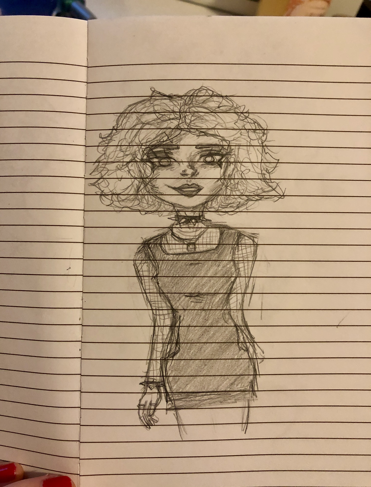
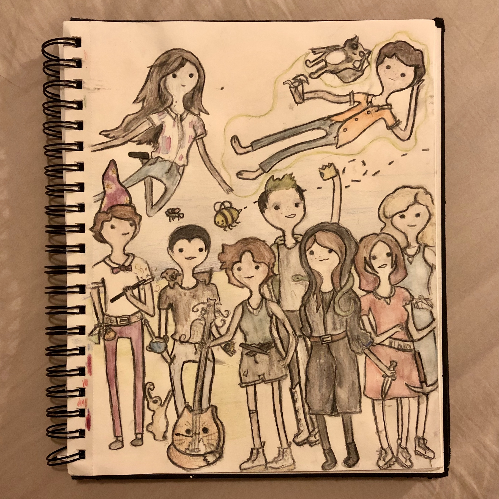

Welcome to my digital art gallery! Recently, I've spent a lot of my free time drawing and painting. I do both traditional and digital art, but almost always draw people.
I've enjoyed art my whole life, from art museums to scribbling when I was bored. I only started drawing as frequently as I do now in 7th grade. Here's some of my favorite artwork I've done recently, ranging from doodles to portraits:
(sorted by medium)
| Watercolor and pencil | Alcohol marker | Oil paint |
|---|---|---|
|  | |
|
| |
Digital Art | |
|  |
I get most of my inspiration from: